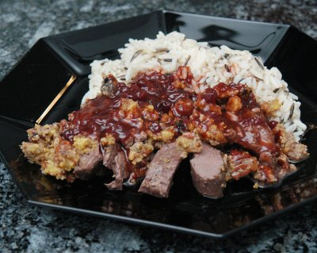

| Zutaten für 2-3 Personen: | |
| Sauce: | |
| 1 | Schalotte |
| 1 kleines | Rüebli |
| 1/4 | kleine Sellerieknolle |
| 1 El | Butter |
| 1 Tl | Tomatenpurée |
| 1 dl | roter Portwein oder Madeira |
| 2.5 dl | Rotwein |
| 4 | schwarze Pfefferkörner |
| 3 | Wacholderbeeren |
| 3-4 | Thymianzweige |
| 1 | Lorbeerblatt |
| Fleisch: | |
| 75 g | weiche Butter |
| 1 | Eigelb |
| 50 g | Baumnusskerne |
| 1 | Wacholderbeere |
| 2-3 | Thymianzweige |
| 25 g | Paniermehl |
| Salz, schwarzer Pfeffer aus der Mühle | |
| 350-400 g | Rehrühckenfilet |
| Zum Fertigstellen: | |
| 2 El | Preiselbeerkompott oder 1 El Preiselbeerkonfitüre |
| 50 g | Butter |
| einige Tropfen | Zitronensaft |
Vorbereitung: 20 Minuten
Ruhen lassen: 10 Minuten
Für die Sauce, Schalotte, Rüebli, Sellerie rüsten und in kleine Würfel schneiden. In der Butter andünsten. Tomatenpurée, Portwein oder Madeira sowie Rotwein beifügen. Pfefferkörner und Wacholderbeeren grob zerdrücken und mit dem Thymian und dem Lorbeerblatt in die Sauce geben. Auf lebhaftem Feuer auf 1 dl einkochen. Die Sauce absieben, dabei die Rückstände auspressen. In die Pfanne zurückgeben und beiseite stellen.
Für das Fleisch die Butter durchrühren bis sich Spitzchen bilden. Das Eigelb beifügen und die Masse so lange weiter schlagen bis sie hell und luftig ist.
Baumnusskerne in einer trockenen Pfanne ohne Fettzugabe leicht rösten. Abkühlen lassen dann fein hacken. Wacholderbeere sehr fein zerdrücken. Thymianblättchen von den Zweigen zupfen. Alle diese Zutaten sowie das Paniermehl zu der Buttermasse beigeben, mit Salz und Pfeffer würzen und gut mischen.
Das Rehrühckenfilet mit Salz und Pfeffer rundum würzen. In eine Gratinform legen. Die Baumnussbutter dick auf der Oberseite des Fleisches ausstreichen. Bis zur Zubereitung kühl aber nicht kalt stellen.
Den Backofen auf 220°C vorheizen.
Das Rehrühckenfilet in der Mitte des vorgeheizten Backofens einschieben und bei 220°C 10 Minuten braten. Den Ofen ausschalten und die Türe öffnen. Das Filet 10 Minuten ruhen lassen damit sich der Fleischsaft verteilen kann.
Inzwischen die Sauce nochmals aufkochen. Preiselbeerkompott oder -konfitüre beifügen. Die Butter in Flocken dazu schneiden und in die leicht kochende Sauce einziehen lassen. Mit Zitronensaft, Salz und Pfeffer abschmecken.
Das Fleisch in Scheiben aufschneiden, in die Gratinform zurückgeben und mit der Sauce umgiessen. Als Beilage passen Selleriepuree und glasierte Kastanien --> Rezept.
Pro Portion: 32 g Eiweiss, 55 g Fett, 19 g Kohlenhydrate, 791 Kalorien, 3310 Joule
d'Chuchi Heft 6, November 1997 Seite 63
Ist etwas aufwendig bringt aber bei der Freundin volle Brownie-Punkte! Hat super geschmeckt. Ich habe Hirschfilet gekauft weil ich am Flughafen auf die schnelle kein Reh bekam. RE, 5.5.2008
@LINKBACK_TAG@ @WAKELOCK@